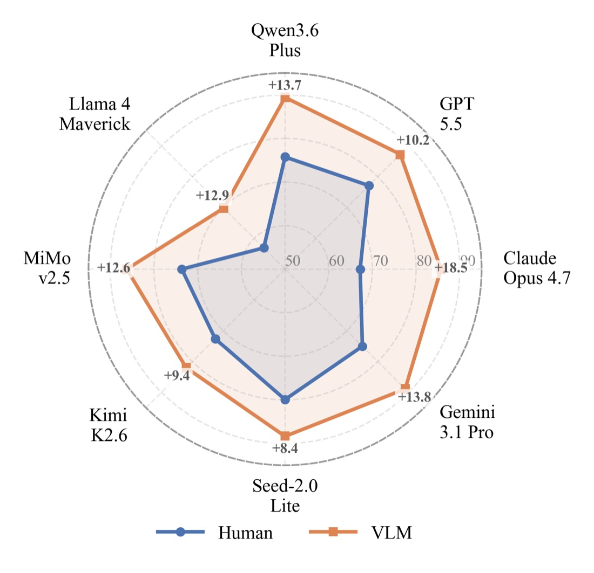
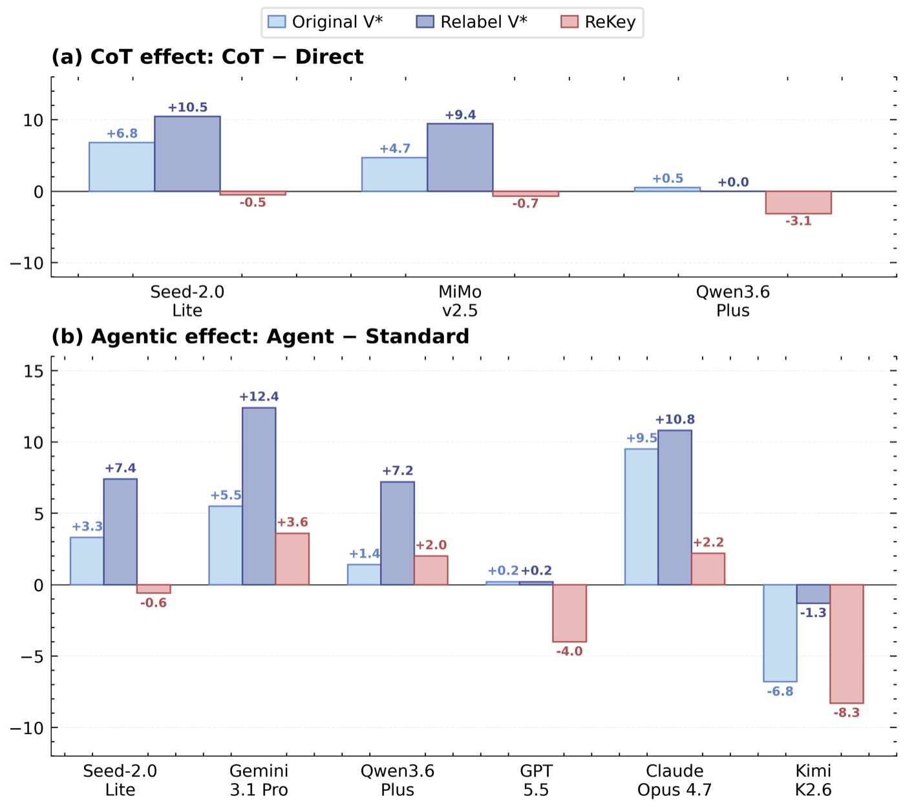

Step 1
Annotate renewable slots

Starting from the original VQA image, REKEY marks candidate edit slots and records what each slot can support, such as adding a cup or changing the color of an existing object.
We first ask whether current VQA benchmarks are still measuring visual perception, or whether part of the score comes from memorized answer-bearing details. As a probe, we keep the original images fixed but replace the question with a fresh human-written question targeting a different visual key. If a model truly solves the image, performance should remain stable; instead, accuracy drops sharply across model families.
| Model | Original V* | Fresh Relabel V* | Drop |
|---|---|---|---|
| Qwen3.6-Plus | 90.6% | 74.3% | -16.3pp |
| GPT-5.5 | 86.9% | 75.9% | -11.0pp |
| Claude Opus 4.7 | 78.5% | 59.7% | -18.8pp |
| Gemini 3.1 Pro | 88.0% | 69.6% | -18.4pp |
| Seed-2.0-Lite | 91.6% | 74.3% | -17.3pp |
| Kimi K2.6 | 81.7% | 63.4% | -18.3pp |
| MiMo v2.5 | 78.0% | 66.5% | -11.5pp |
| Llama 4 Maverick | 61.3% | 51.8% | -9.5pp |
This consistent drop indicates that the static benchmark score is partially inflated by leaked or memorized visual-key information. REKEY starts from this observation and makes the visual key renewable.
Each slide keeps the image fixed and swaps only the small visual key being queried.
REKEY does not only rewrite the question. It identifies editable visual-key slots, regenerates the local visual evidence under context, and then writes a fresh question whose answer depends on the newly generated key.
Starting from the original VQA image, REKEY marks candidate edit slots and records what each slot can support, such as adding a cup or changing the color of an existing object.

REKEY crops a larger context window around the slot, prompts a generative model to edit only the marked region, and keeps the surrounding pixels fixed.

The generated patch is pasted back into the full image, producing a refreshed benchmark item with a new answer-bearing visual key and a matching multiple-choice question.
We evaluate whether REKEY removes the benchmark-specific advantage exposed by the relabel audit, while preserving visual-search difficulty and avoiding VLM-generated shortcut annotations.
| Model | Original V* | Fresh Relabel V* | REKEY | REKEY vs Relabel |
|---|---|---|---|---|
| Qwen3.6-Plus | 90.6 | 74.3 | 75.7 +/-5.4 | +1.4 |
| GPT-5.5 | 86.9 | 75.9 | 77.1 +/-2.1 | +1.2 |
| Claude Opus 4.7 | 78.5 | 59.7 | 67.2 +/-3.9 | +7.5 |
| Gemini 3.1 Pro | 88.0 | 69.6 | 75.0 +/-3.3 | +5.4 |
| Seed-2.0-Lite | 91.6 | 74.3 | 79.9 +/-2.6 | +5.6 |
| Kimi K2.6 | 81.7 | 63.4 | 72.6 +/-0.8 | +9.2 |
| MiMo v2.5 | 78.0 | 66.5 | 73.6 +/-4.7 | +7.2 |
| Llama 4 Maverick | 61.3 | 51.8 | 56.9 +/-0.6 | +5.1 |
| Average | 82.1 | 67.0 | 72.3 | +5.3 |
On LLaVA-1.5-13B, position questions remain nearly unchanged after regeneration, suggesting that REKEY preserves the visual-search structure while renewing answer-bearing evidence.
| Setting | Overall | Attr | Position |
|---|---|---|---|
| Original V* | 48.7 | 43.5 | 56.6 |
| REKEY | 42.6 +/-2.4 | 33.2 +/-3.9 | 56.2 +/-3.3 |
| Delta | -6.1 | -10.2 | -0.3 |

GPT-5.5 slot annotations produce add regions that are 3.2x larger at the median, making the generated benchmark +8.4 to +18.5pp easier than human annotations across models.

CoT and agentic search give larger gains on Original or Relabel V* than on REKEY, indicating that REKEY is less sensitive to memorized or search-amplified static visual keys.
@misc{rekey2026,
title = {REKEY: Metadata-Grounded Visual-Key Regeneration for Contamination-Resistant VQA Evaluation},
author = {Anonymous ACL submission},
year = {2026},
url = {https://github.com/Xxxxxsun/rekey-vstar}
}